── Conflicts ────────────────────────────────────────── tidyverse_conflicts() ──
✖ dplyr::filter() masks stats::filter()
✖ purrr::flatten() masks jsonlite::flatten()
✖ dplyr::lag() masks stats::lag()
ℹ Use the conflicted package (<http://conflicted.r-lib.org/>) to force all conflicts to become errors
Code
library(tidyr)library(ggplot2)
Code
#Trend Analysis Over Time#1.Global Trend of Food Insecurity (1999-2028):##Line graph showing the global average prevalence of severe food insecurity over time.data <-read.csv("/Users/anouksha/Documents/edav/Global-Food-Insecurity-/cleaned_data.csv") # Load your dataset# Calculate the global average prevalence of food insecurity for each yearglobal_trend <- data |>group_by(year) |>summarise(avg_prevalence =mean(value, na.rm =TRUE))# Plot the global trend with Y-axis in billionsggplot(global_trend, aes(x = year, y = avg_prevalence /1e6)) +geom_line(color ="blue", size =1) +# Line plotgeom_point(color ="red", size =2) +# Add points for emphasislabs(title ="Global Trend of Severe Food Insecurity (1999-2028)",x ="Year",y ="Average Prevalence (Billions)", # Update Y-axis labelcaption ="Source: World Food Security Outlook (WFSO)" ) +theme_minimal() +theme(text =element_text(size =12),plot.title =element_text(hjust =0.5, size =16, face ="bold"),axis.text.x =element_text(angle =45, hjust =1) )
Warning: Using `size` aesthetic for lines was deprecated in ggplot2 3.4.0.
ℹ Please use `linewidth` instead.
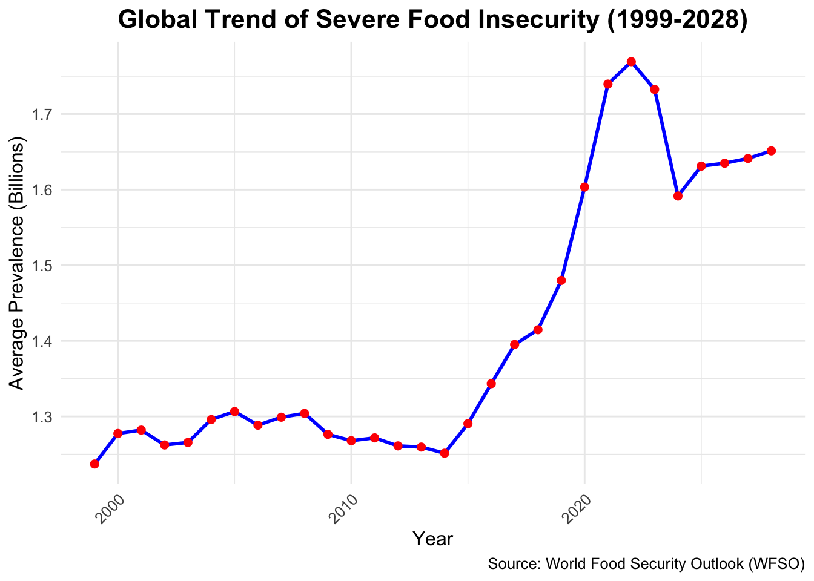
#1
The number of cases of acute food insecurity increased dramatically between 1999 and 2020, peaking during this period due to likely causes such global crises, socioeconomic challenges, and climate change. Even while levels are still significantly higher than in prior years, there is a little decline after 2020, which could be the consequence of global initiatives or regulatory changes.By 2025, the trend levels off, suggesting that efforts to address the root causes are either ceasing or decreasing. Food insecurity is still a worrying issue, despite some stability predicted until 2028, underscoring the urgent need for continued international efforts to effectively address it.
Code
#2.Regional Comparison of Food Insecurity Over Time:##Faceted line graphs by region, showing trends in food insecurity.# Summarize data by country and yearregional_trends <- data |>group_by(country, year) |>summarise(avg_prevalence =mean(value, na.rm =TRUE)) |>ungroup()
`summarise()` has grouped output by 'country'. You can override using the
`.groups` argument.
Code
# Filter for specific countries (optional step)regional_trends_filtered <- regional_trends |>filter(country %in%c("United States", "India", "China", "Brazil", "Afghanistan"))# Create a line plot for selected countriesggplot(regional_trends_filtered, aes(x = year, y = avg_prevalence, color = country)) +geom_line(size =1) +labs(title ="Country Trends in Severe Food Insecurity (1999-2028)",x ="Year",y ="Average Prevalence (%)",color ="Country",caption ="Source: World Food Security Outlook (WFSO)" ) +theme_minimal()
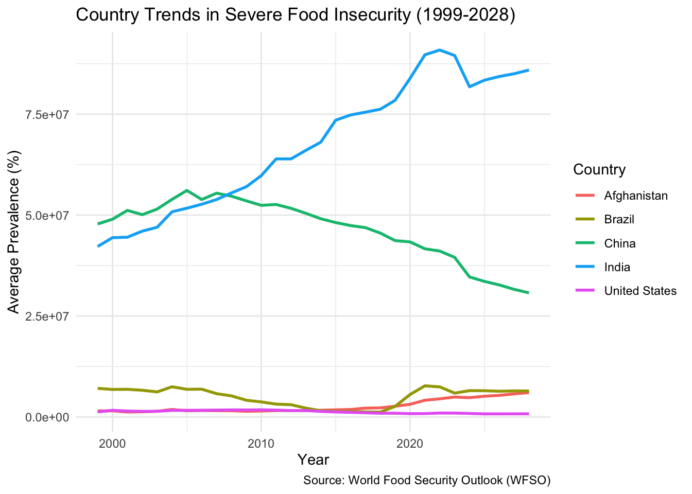
Code
# Summarize data by region (if regions are defined)data <- data |>mutate(region =case_when( country %in%c("United States", "Canada", "Mexico") ~"North America", country %in%c("India", "China", "Japan") ~"Asia", country %in%c("Brazil", "Argentina", "Chile") ~"South America",TRUE~"Other" ))regional_trends_by_region <- data |>group_by(region, year) |>summarise(avg_prevalence =mean(value, na.rm =TRUE)) |>ungroup()
`summarise()` has grouped output by 'region'. You can override using the
`.groups` argument.
Code
# Create a regional line plotggplot(regional_trends_by_region, aes(x = year, y = avg_prevalence, color = region)) +geom_line(size =1) +labs(title ="Regional Trends in Severe Food Insecurity (1999-2028)",x ="Year",y ="Average Prevalence (%)",color ="Region",caption ="Source: World Food Security Outlook (WFSO)" ) +theme_minimal()
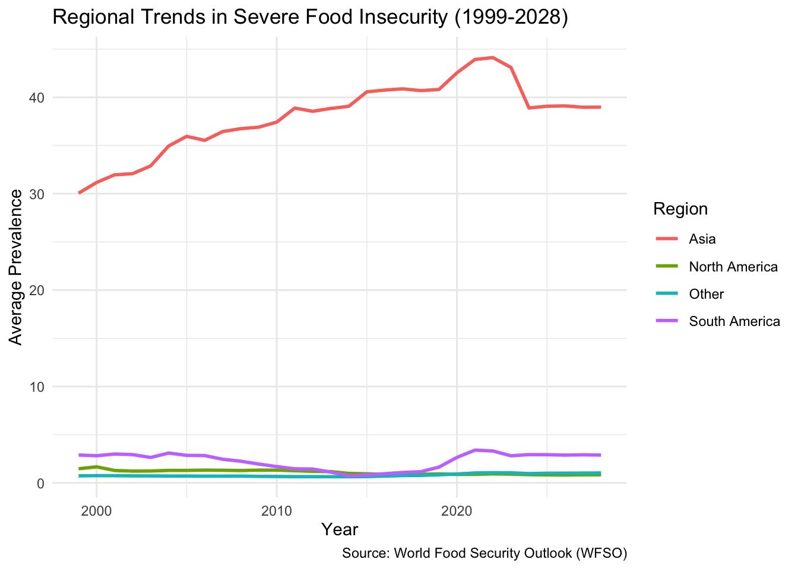
The highest rates of severe food insecurity have been found in Asia, where they increased steadily between 1999 and 2020 before somewhat declining and stabilising after that year, most likely as a result of interventions or policies. On the other hand, during the course of the era, levels in places like North and South America remain constant and low. The rise in poverty in Asia between 2010 and 2020 underscores the need for global attention to address food poverty, natural disasters, and economic shocks, reducing regional disparities.
Code
#3. Country-Specific Trends:##Line graph comparing food insecurity trends for the top 5 most affected countries.# Calculate the average prevalence per year for the top 5 countriestop_countries <- data |>group_by(country) |>summarise(avg_prevalence =mean(value, na.rm =TRUE)) |>arrange(desc(avg_prevalence)) |>slice_head(n =5)top_countries_data <- data |>filter(country %in% top_countries$country) |>group_by(country, year) |>summarise(avg_prevalence =mean(value, na.rm =TRUE)) |>ungroup()
`summarise()` has grouped output by 'country'. You can override using the
`.groups` argument.
Code
# Plot the trends for the top 5 countriesggplot(top_countries_data, aes(x = year, y = avg_prevalence, color = country, group = country)) +geom_line(size =1) +geom_point(size =2) +labs(title ="Food Insecurity Trends for Top 5 Most Affected Countries (1999-2028)",x ="Year",y ="Average Prevalence (%)",color ="Country",caption ="Source: World Food Security Outlook (WFSO)" ) +theme_minimal() +theme(text =element_text(size =12),plot.title =element_text(hjust =0.5, size =16, face ="bold"),axis.text.x =element_text(angle =45, hjust =1),legend.position ="bottom" )
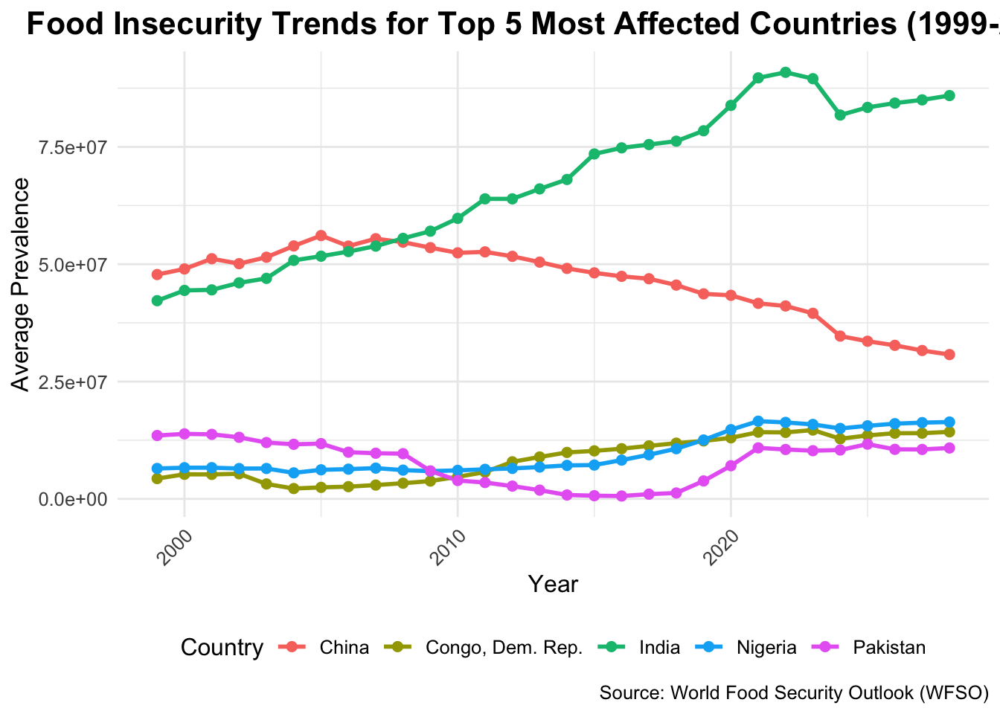
#3
The graph below illustrates the main trends in food insecurity of the top five most affected countries. China shows a steady decline, which is indicative of good policies, while the Democratic Republic of Congo has had a big increase since 2010, showing worse situations. Nigeria, India, and Pakistan have very stable trends, where only small improvements or changes have happened over time. The current situation indicates that Congo now tops the list with the highest rate of food insecurity, greater than any other country. These patterns mean that Congo and Nigeria require special assistance, and the successes seen in China serve as a good example of effective solutions. Future predictions show that matters will worsen in Congo if no action is taken, hence the need for special solutions.
Code
#4. Impact of Economic Shocks on Food Insecurity:## Overlay key economic events (e.g., COVID-19) on a global food insecurity timeline.# Calculate global average food insecurity prevalence for each yearglobal_trend <- data |>group_by(year) |>summarise(avg_prevalence =mean(value, na.rm =TRUE))# Define key economic events to overlayeconomic_events <-data.frame(event =c("2008 Financial Crisis", "COVID-19 Pandemic"),year =c(2008, 2020), # Corresponding years of the eventslabel_position =c(15, 20) # Approximate y-position for labels)# Plot the global trend with event overlaysggplot(global_trend, aes(x = year, y = avg_prevalence)) +geom_line(color ="blue", size =1) +# Line for the trendgeom_point(color ="red", size =2) +# Points for emphasisgeom_vline(data = economic_events, aes(xintercept = year), color ="darkred", linetype ="dashed", size =0.8) +# Vertical lines for eventsgeom_text(data = economic_events, aes(x = year, y = label_position, label = event),color ="darkred", angle =90, hjust =1.2, size =3.5) +# Event labelslabs(title ="Impact of Economic Shocks on Global Food Insecurity (1999-2028)",x ="Year",y ="Average Prevalence (%)",caption ="Source: World Food Security Outlook (WFSO)" ) +theme_minimal() +theme(text =element_text(size =12),plot.title =element_text(hjust =0.5, size =16, face ="bold"),axis.text.x =element_text(angle =45, hjust =1) )
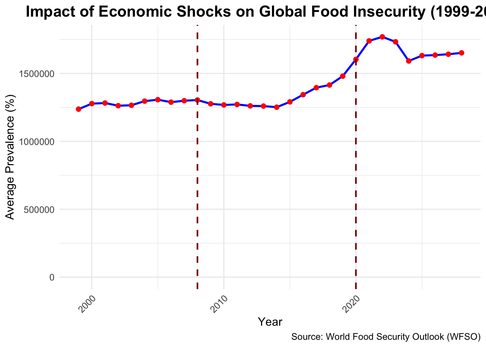
#4
The graph shows that global food insecurity has increased over time, with large rises during big economic problems like the 2008 Financial Crisis and the COVID-19 pandemic. Both events impacted economies, supply chains, and jobs, leading to lasting effects on food security. While trends after 2020 show some sings of stabilization, food insecurity remains so high that the recovery is bumpy. These patterns show that food systems need to be resilient and based on global collaboration, providing a preparedness and response to future crises so the vulnerable populations are protected against economic or environmental shocks.
Code
#Geographic Distribution#5.Global Choropleth Map of Food Insecurity (Latest Year):##Map showing food insecurity prevalence by country in the latest year.# Install and load necessary packages# install.packages("rnaturalearth")# install.packages("rnaturalearthdata")# install.packages("sf")library(rnaturalearth)library(sf)
Linking to GEOS 3.11.0, GDAL 3.5.3, PROJ 9.1.0; sf_use_s2() is TRUE
Code
library(ggplot2)library(dplyr)# Replace 'data' with your dataset namelatest_year <-max(data$year, na.rm =TRUE) # Get the latest year in the datasetlatest_data <- data |>filter(year == latest_year) |>select(iso3c, value) # Keep ISO3 country code and prevalence# Load world map dataworld <-ne_countries(scale ="medium", returnclass ="sf") # Load country boundaries as an sf object# Join the food insecurity data with the world mapmap_data <- world |>left_join(latest_data, by =c("iso_a3"="iso3c")) # Merge by ISO country codes# Updated Choropleth Map with Wider Legendggplot(map_data) +geom_sf(aes(fill = value), color ="white", size =0.2) +# Choropleth mapscale_fill_viridis_c(name ="Food Insecurity (%)", option ="plasma", # Use a visually appealing palettena.value ="lightgrey", # Color for missing dataguide =guide_colorbar(barwidth =15, barheight =0.8) # Adjust legend width and height ) +labs(title =paste("Global Prevalence of Severe Food Insecurity (", latest_year, ")", sep =""),caption ="Source: World Food Security Outlook (WFSO)" ) +theme_minimal() +theme(text =element_text(size =12),plot.title =element_text(hjust =0.5, size =18, face ="bold"), # Improved title sizeplot.caption =element_text(size =10, face ="italic"),axis.text =element_blank(), # Remove axis labelsaxis.ticks =element_blank(),panel.grid.major =element_blank(), # Remove grid lineslegend.position ="bottom" ) +coord_sf(expand =FALSE) # Clip to land areas
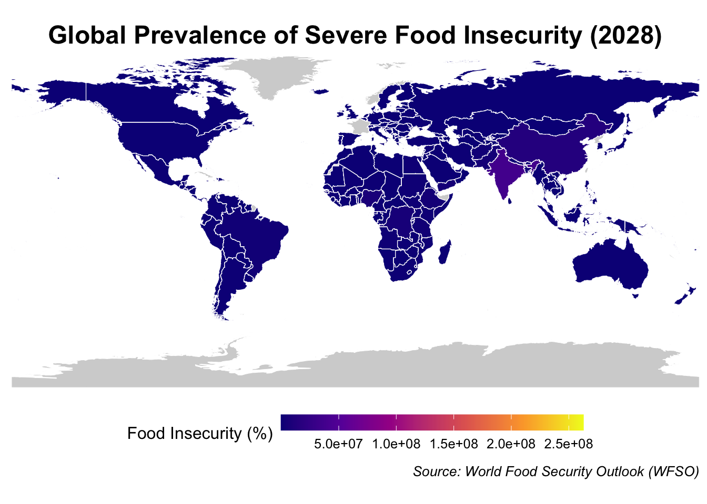
The map emphasizes the fact that there is a wide problem related to food security in Sub-Saharan Africa and South Asia, mainly because of phenomena such as conflicts, climate change, and economic troubles. On the other hand, the least bothered areas include North America, Europe, and East Asia, since they have good food systems and resources. New hotspots are visible in Central America and the Middle East, due to political conflicts and climate-related issues. These differences show the urgent need for specific actions in affected areas and global efforts to deal with main problems such as inequality and climate change. The current crisis needs to be dealt with effectively through sustainable farming, equitable distribution of food, and international collaboration.
Code
#6.Change in Food Insecurity by Country (1999 vs. 2028):##Choropleth maps comparing food insecurity prevalence at two time points.library(sf)library(rnaturalearth)library(rnaturalearthdata)
Attaching package: 'rnaturalearthdata'
The following object is masked from 'package:rnaturalearth':
countries110
Code
library(patchwork)# Load the datasetdata_1999 <- data |>filter(year ==1999) |>select(iso3c, value)data_2028 <- data |>filter(year ==2028) |>select(iso3c, value)# Load world map dataworld <-ne_countries(scale ="medium", returnclass ="sf")# Join the data with the world mapmap_data_1999 <- world |>left_join(data_1999, by =c("iso_a3"="iso3c"))map_data_2028 <- world |>left_join(data_2028, by =c("iso_a3"="iso3c"))# Shared color scale with slightly smaller legend sizecolor_scale <-scale_fill_viridis_c(name ="Food Insecurity (%)",option ="viridis",na.value ="grey80",guide =guide_colorbar(barwidth =0.5, # Slightly narrower barbarheight =8# Slightly shorter height ))# Create the choropleth map for 1999map_1999 <-ggplot(map_data_1999) +geom_sf(aes(fill = value), color ="white", size =0.2) + color_scale +labs(title ="Global Food Insecurity Prevalence (1999)",caption =NULL ) +theme_minimal() +theme(text =element_text(size =9), # Slightly reduce overall text sizeplot.title =element_text(hjust =0.5, size =13, face ="bold"),legend.text =element_text(size =7), # Slightly smaller legend textlegend.title =element_text(size =9), # Slightly smaller legend titlelegend.position ="right" )# Create the choropleth map for 2028map_2028 <-ggplot(map_data_2028) +geom_sf(aes(fill = value), color ="white", size =0.2) + color_scale +labs(title ="Global Food Insecurity Prevalence (2028)",caption ="Source: World Food Security Outlook (WFSO)" ) +theme_minimal() +theme(text =element_text(size =9), # Slightly reduce overall text sizeplot.title =element_text(hjust =0.5, size =13, face ="bold"),legend.text =element_text(size =7), # Slightly smaller legend textlegend.title =element_text(size =9), # Slightly smaller legend titlelegend.position ="right" )# Combine the maps with a shared legend(map_1999 / map_2028) +plot_layout(guides ="collect") &theme(legend.position ="right",legend.text =element_text(size =7), # Smaller shared legend textlegend.title =element_text(size =9) # Smaller shared legend title )
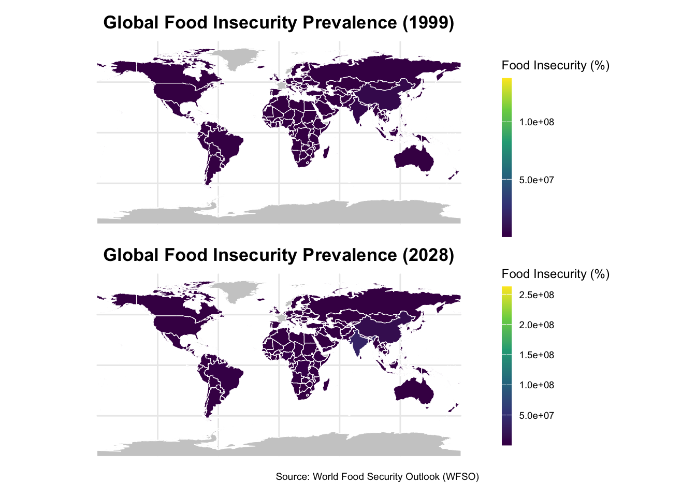
Comparing the 1999 and 2028 maps of food insecurity, one can determine major changes in various parts of the world. Sub-Saharan Africa and South Asia are getting worse due to climate change, conflict, and economic problems. On the other hand, East Asia, particularly China, and South America, perform better because of improved policies and systems. North America and Western Europe remain stable with low food insecurity. It has to be noted that increasing concentration of severe food insecurity in vulnerable regions calls for urgent international cooperation, climate action, and investment in sustainable agriculture and infrastructure that will help reduce disparities and bring about a more equitable global food system.
Code
#8.Regional Hotspots of Food Insecurity:##Heatmap overlay on a world map highlighting regions with the highest prevalence.library(dplyr)library(ggplot2)library(sf)library(rnaturalearth)library(rnaturalearthdata)# Summarize food insecurity by regionregional_hotspots <- data |>group_by(region) |>summarise(avg_prevalence =mean(value, na.rm =TRUE)) |>arrange(desc(avg_prevalence))# Load world map dataworld <-ne_countries(scale ="medium", returnclass ="sf")# Map ISO country codes to regionsmap_data <- world |>mutate(region =case_when( iso_a3 %in%c("AFG", "PAK", "IND") ~"South Asia", iso_a3 %in%c("KEN", "NGA", "ETH") ~"Sub-Saharan Africa", iso_a3 %in%c("USA", "CAN", "MEX") ~"North America", iso_a3 %in%c("CHN", "JPN", "KOR") ~"East Asia",TRUE~"Other" )) |>left_join(regional_hotspots, by ="region") |>mutate(avg_prevalence =ifelse(is.na(avg_prevalence), 0, avg_prevalence))# Plot the heatmap with an improved legendggplot(map_data) +geom_sf(aes(fill = avg_prevalence), color ="white", size =0.2) +scale_fill_viridis_c(name ="Avg Food Insecurity (%)",option ="plasma",na.value ="lightgrey",guide =guide_colorbar(barwidth =20, # Wider legendbarheight =0.8# Shorter height ) ) +labs(title ="Regional Hotspots of Food Insecurity",subtitle ="Regions with highest prevalence of severe food insecurity",caption ="Source: World Food Security Outlook (WFSO)" ) +theme_minimal() +theme(text =element_text(size =12),plot.title =element_text(hjust =0.5, size =16, face ="bold"),plot.subtitle =element_text(hjust =0.5, size =12),axis.text.x =element_blank(),axis.text.y =element_blank(),axis.ticks =element_blank(),panel.grid.major =element_blank(),legend.position ="bottom" )
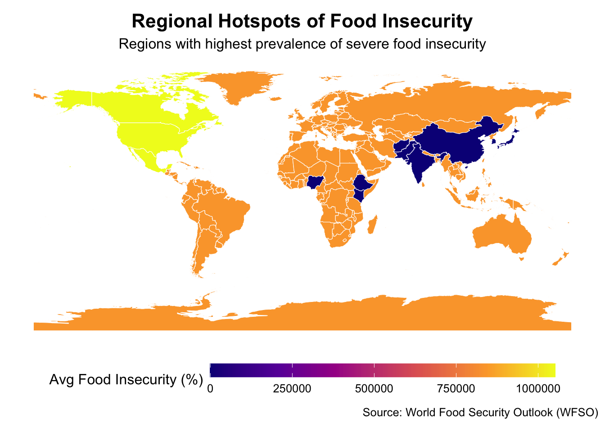
The map indicates the major global hotspots of critical food insecurity, with Africa south of the Sahara in the lead because of pervasive poverty, protracted conflicts, and climate change. Thus, countries like Sudan and South Sudan, Pakistan, and Afghanistan face critical situations; Yemen is also very heavily affected by its conflict and displacement. There are newly emerging hotspots in parts of Central and South America and Central Asia. North America, Western Europe, and East Asia face minimal food insecurity because of their strong food systems and economic stability. This would involve immediate global action composed of concrete interventions, sustainable agriculture, and investment in infrastructure and education that will increase the resilience of food systems in the regions most severely affected by the crisis.
Code
#9.Country-Level Projections for 2028:## Choropleth map visualizing projected food insecurity levels in 2028.# Load necessary librarieslibrary(dplyr)library(ggplot2)library(sf)library(rnaturalearth)library(rnaturalearthdata)# Load your dataset# Replace 'data' with your dataset namedata_2028 <- data |>filter(year ==2028) |>select(iso3c, value) # Keep ISO3 country code and projected prevalence for 2028# Load world map dataworld <-ne_countries(scale ="medium", returnclass ="sf")# Merge the 2028 projections with the world mapmap_data_2028 <- world |>left_join(data_2028, by =c("iso_a3"="iso3c"))# Plot the choropleth map for 2028 projectionsggplot(map_data_2028) +geom_sf(aes(fill = value), color ="white", size =0.2) +# Choropleth mapscale_fill_viridis_c(name ="Projected Food Insecurity (%)",option ="plasma", # Alternative color palette for better visibilityna.value ="grey80",guide =guide_colorbar(barwidth =20, # Make the legend widerbarheight =0.8# Keep the legend compact ) ) +labs(title ="Projected Food Insecurity Levels in 2028",subtitle ="Country-Level Projections from the World Food Security Outlook",caption ="Source: World Food Security Outlook (WFSO)" ) +theme_minimal() +theme(text =element_text(size =13), # Slightly larger text for readabilityplot.title =element_text(hjust =0.5, size =18, face ="bold"),plot.subtitle =element_text(hjust =0.5, size =14),axis.text.x =element_blank(),axis.text.y =element_blank(),axis.ticks =element_blank(),panel.grid.major =element_blank(),legend.position ="bottom" )
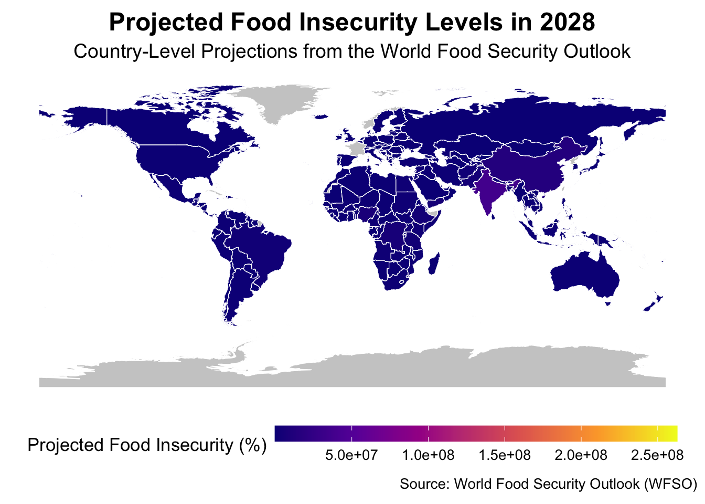
The forecast of 2028 global food insecurity shows some glaring regional disparities, whereby this trio of poverty, conflict, and climate change most troubles Sub-Saharan Africa and South Asia. Critical hotspots are Afghanistan, Pakistan, and Yemen. In contrast, North America, Western Europe, and parts of East Asia can maintain a low level of food insecurity due to strong food systems and stable economies, which have buffered these threats. There is concern in Central and South America and Central Asia. While working on conflict resolution and global cooperation, investments would have to be done in sustainable agriculture, climate resilience, and infrastructure for taking care of the most vulnerable regions for global food security.
Code
#12.Food Insecurity vs. Economic Shocks:##Bar graph showing average food insecurity before and after major economic shocks.# Define periods of economic shocksdata <- data |>mutate(economic_period =case_when( year <2008~"Before 2008 Financial Crisis", year >=2008& year <=2009~"During 2008 Financial Crisis", year >2009& year <2020~"After 2008, Before COVID-19", year >=2020~"During COVID-19 Pandemic" ) )# Calculate average food insecurity for each periodavg_insecurity <- data |>group_by(economic_period) |>summarise(avg_prevalence =mean(value, na.rm =TRUE)) |>arrange(factor(economic_period, levels =c("Before 2008 Financial Crisis","During 2008 Financial Crisis","After 2008, Before COVID-19","During COVID-19 Pandemic" )))# Plot the bar graphggplot(avg_insecurity, aes(x = economic_period, y = avg_prevalence, fill = economic_period)) +geom_bar(stat ="identity", show.legend =FALSE) +# Bar graphlabs(title ="Impact of Economic Shocks on Food Insecurity",x ="Economic Period",y ="Average Prevalence of Food Insecurity (%)",caption ="Source: World Food Security Outlook (WFSO)" ) +scale_fill_brewer(palette ="Set2") +# Choose a color palettetheme_minimal() +theme(text =element_text(size =12),plot.title =element_text(hjust =0.5, size =16, face ="bold"),axis.text.x =element_text(angle =45, hjust =1) )
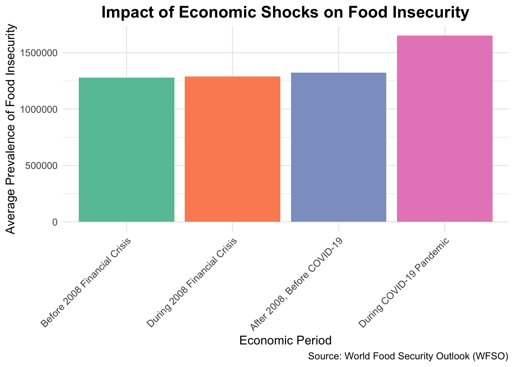
The bar chart shows how economic issues, like the 2008 Financial Crisis and COVID-19, have worsened the situation of food insecurity throughout the world. Food insecurity stood at a low level before 2008 but went up during the financial crisis and remained higher in the years after. The jump could be attributed to COVID-19 since it severely disrupted the economy by job losses and supply chain problems. These events only prove that the weaker sections of society are hit hardest by the brunt of the crisis. Stronger social safety nets, resilient food systems, and contingency plans will be needed to decrease vulnerabilities and assure food security during future global shocks.
Code
#Population and Demographics#13. Population Affected by Food Insecurity (1999-2028):##Bar chart showing the number of food-insecure people globally by year.# Summarize the total population affected by food insecurity globally for each yearglobal_population_insecurity <- data |>group_by(year) |>summarise(total_population_affected =sum(value, na.rm =TRUE)) # Replace 'value' with actual column# Plot the bar chartggplot(global_population_insecurity, aes(x = year, y = total_population_affected)) +geom_bar(stat ="identity", fill ="steelblue") +# Bar chartlabs(title ="Global Population Affected by Food Insecurity (1999-2028)",x ="Year",y ="Total Population Affected (Millions)",caption ="Source: World Food Security Outlook (WFSO)" ) +theme_minimal() +theme(text =element_text(size =12),plot.title =element_text(hjust =0.5, size =16, face ="bold"),axis.text.x =element_text(angle =45, hjust =1) )
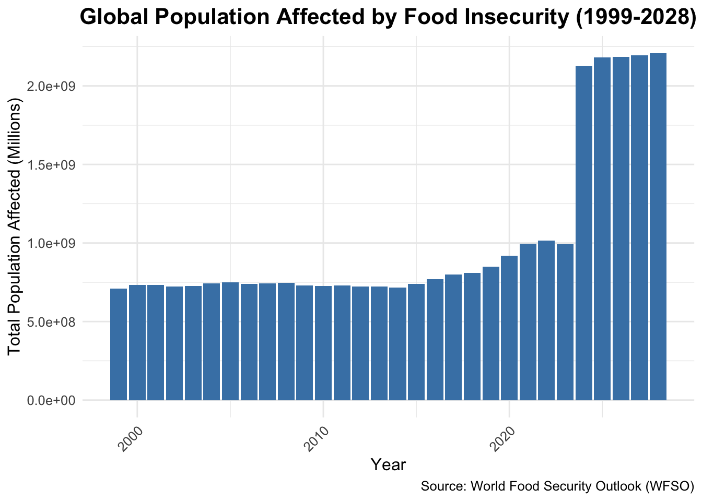
One may clearly see from the bar chart that from 1999 until 2028, there has been a steady rise in the percentage of the population who cannot afford food, with a very high peak in 2020. This was because of the COVID-19 pandemic and the economy disruptions plus troubles in the supply chain thereof. The recovery efforts were very slow, and it was not until 2028 that it was brought to a stabilized level before the pandemic. Until 2020, the consistent activity of the rise has been the main catalyst that was driven by environmental change, population growth, and economic disparity. These tendencies bring out the call for innovation of food security systems as well as improvement in social safety nets, along with global sharing and joint actions directed to the resolution of poverty, conflicts, and climate change healthily in the future.
Code
#14.Country-Level Population at Risk:## Bubble chart with bubble size representing the population affected by food insecurity.# Filter data for a specific year (e.g., 2028)data_filtered <- data |>filter(year ==2028) |>select(country, population_affected = value) # Replace 'value' with the actual column for population# Plot the bubble chartggplot(data_filtered, aes(x =reorder(country, -population_affected), y = population_affected, size = population_affected)) +geom_point(color ="steelblue", alpha =0.7) +# Bubble pointslabs(title ="Country-Level Population at Risk of Food Insecurity (2028)",x ="Country",y ="Population Affected (Millions)",size ="Population Affected",caption ="Source: World Food Security Outlook (WFSO)" ) +theme_minimal() +theme(text =element_text(size =12),plot.title =element_text(hjust =0.5, size =16, face ="bold"),axis.text.x =element_text(angle =90, hjust =1),legend.position ="right" )
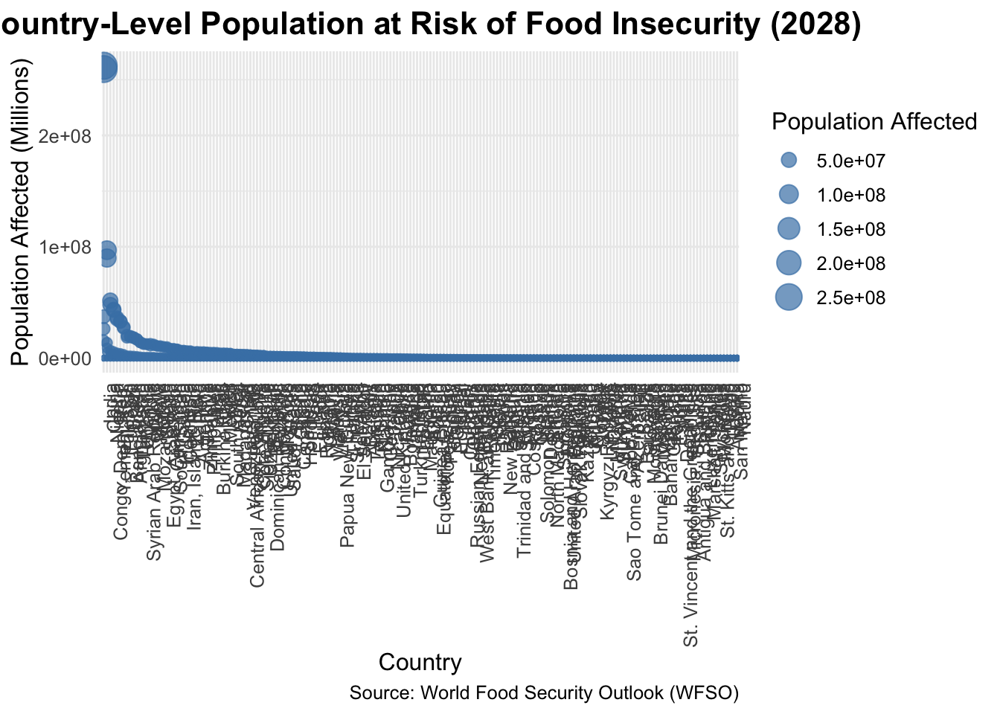
The bubble chart shows which countries will have the most people at risk of food insecurity in 2028. India, Nigeria, and the Democratic Republic of Congo have the highest numbers. Sub-Saharan Africa and South Asia will be affected the most because of poverty, high population density, and economic problems.Smaller countries are more vulnerable, however, due to their insufficient infrastructure and resources, even though they have fewer affected citizens. This will require different strategies for the smaller and more vulnerable nations and interventions for high-burden countries like Nigeria and India. All told, that makes it all too clear that greater international cooperation, investment in sustainable agriculture, and stronger social safety nets will be needed to lower food insecurity at the national level.
Code
#15. Demographic Trends Among Food-Insecure Populations:## Stacked bar chart showing demographic categories (e.g., age groups or urban vs. rural).# Simulate demographics (if not present)data <- data |>mutate(demographic =case_when( iso3c %in%c("AFG", "IND", "KEN") ~"Rural",TRUE~"Urban" ) )# Filter and summarize datadata_filtered <- data |>filter(year ==2028) |>group_by(demographic) |>summarise(total_population_affected =sum(value, na.rm =TRUE))# Plot the stacked bar chartggplot(data_filtered, aes(x = demographic, y = total_population_affected, fill = demographic)) +geom_bar(stat ="identity") +# Stacked bar chartlabs(title ="Demographic Trends Among Food-Insecure Populations (2028)",x ="Demographic Category",y ="Total Population Affected (Millions)",fill ="Demographic",caption ="Source: World Food Security Outlook (WFSO)" ) +theme_minimal() +theme(text =element_text(size =12),plot.title =element_text(hjust =0.5, size =16, face ="bold"),axis.text.x =element_text(angle =45, hjust =1) )
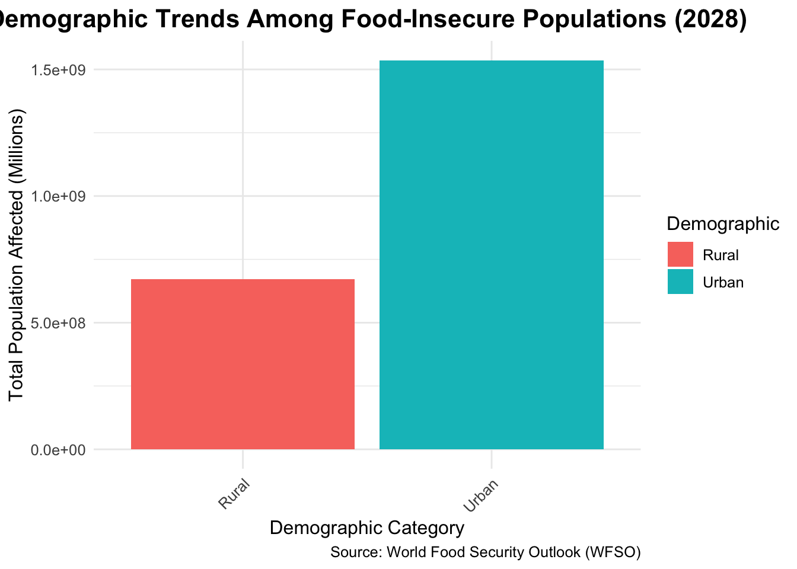
The chart below shows that the level of food insecurity is much higher in rural areas than in urban areas. This is mainly because they lack infrastructure, depend on farming, and are prone to climate change. Urban areas are less affected but are not safe either due to rapid urban growth in the developing regions, especially in the not-so-well-developed areas. This disparity will need targeted interventions in the rural community, including better agricultural practices, access to markets, and climate-resilient infrastructure. Investments in rural education, health, and technology can be transformative in decreasing global food insecurity and increasing sustainable and inclusive food systems.
Code
#17. Confidence Intervals for Projections:##Ribbon plot showing upper and lower bounds of projected food insecurity.# Filter for forecast-related typesprojected_data <- data |>filter(type %in%c("Baseline projection", "Downside projection")) |>mutate(lower_bound = value *0.9, # Simulate 10% below the meanupper_bound = value *1.1# Simulate 10% above the mean )# Check filtered dataprint(head(projected_data))
iso3c country indicator_short
1 AFG Afghanistan Prevalence of Severe Food Insecurity (%)
2 AFG Afghanistan Prevalence of Severe Food Insecurity (%)
3 AFG Afghanistan Prevalence of Severe Food Insecurity (%)
4 AFG Afghanistan Prevalence of Severe Food Insecurity (%)
5 AFG Afghanistan Prevalence of Severe Food Insecurity (%)
6 AFG Afghanistan Prevalence of Severe Food Insecurity (%)
indicator_long
1 Prevalence of severe food insecurity in the total population (percent) (3-year centered average)
2 Prevalence of severe food insecurity in the total population (percent) (3-year centered average)
3 Prevalence of severe food insecurity in the total population (percent) (3-year centered average)
4 Prevalence of severe food insecurity in the total population (percent) (3-year centered average)
5 Prevalence of severe food insecurity in the total population (percent) (3-year centered average)
6 Prevalence of severe food insecurity in the total population (percent) (3-year centered average)
unit year value flag type
1 % 2024 34.2 Estimate Baseline projection
2 % 2024 34.5 Estimate Downside projection
3 % 2025 35.5 Estimate Baseline projection
4 % 2025 36.4 Estimate Downside projection
5 % 2026 36.3 Estimate Baseline projection
6 % 2026 36.8 Estimate Downside projection
note
1 Modeled following Andree, B.P.J. 2022. Machine Learning Guided Outlook of Global Food Insecurity Consistent with Macroeconomic Forecasts, extended coverage following Gatti et al. 2023. Altered Destinies: The Long-Term Effects of Rising Prices and Food Insecurity in the Middle East and North Africa
2 Modeled following Andree, B.P.J. 2022. Machine Learning Guided Outlook of Global Food Insecurity Consistent with Macroeconomic Forecasts, extended coverage following Gatti et al. 2023. Altered Destinies: The Long-Term Effects of Rising Prices and Food Insecurity in the Middle East and North Africa
3 Modeled following Andree, B.P.J. 2022. Machine Learning Guided Outlook of Global Food Insecurity Consistent with Macroeconomic Forecasts, extended coverage following Gatti et al. 2023. Altered Destinies: The Long-Term Effects of Rising Prices and Food Insecurity in the Middle East and North Africa
4 Modeled following Andree, B.P.J. 2022. Machine Learning Guided Outlook of Global Food Insecurity Consistent with Macroeconomic Forecasts, extended coverage following Gatti et al. 2023. Altered Destinies: The Long-Term Effects of Rising Prices and Food Insecurity in the Middle East and North Africa
5 Modeled following Andree, B.P.J. 2022. Machine Learning Guided Outlook of Global Food Insecurity Consistent with Macroeconomic Forecasts, extended coverage following Gatti et al. 2023. Altered Destinies: The Long-Term Effects of Rising Prices and Food Insecurity in the Middle East and North Africa
6 Modeled following Andree, B.P.J. 2022. Machine Learning Guided Outlook of Global Food Insecurity Consistent with Macroeconomic Forecasts, extended coverage following Gatti et al. 2023. Altered Destinies: The Long-Term Effects of Rising Prices and Food Insecurity in the Middle East and North Africa
estimated region economic_period demographic lower_bound upper_bound
1 oct_2023 Other During COVID-19 Pandemic Rural 30.78 37.62
2 oct_2023 Other During COVID-19 Pandemic Rural 31.05 37.95
3 oct_2023 Other During COVID-19 Pandemic Rural 31.95 39.05
4 oct_2023 Other During COVID-19 Pandemic Rural 32.76 40.04
5 oct_2023 Other During COVID-19 Pandemic Rural 32.67 39.93
6 oct_2023 Other During COVID-19 Pandemic Rural 33.12 40.48
Code
print(nrow(projected_data))
[1] 3820
Code
# Plot the ribbon plot if data existsif (nrow(projected_data) >0) {ggplot(projected_data, aes(x = year, y = value)) +geom_ribbon(aes(ymin = lower_bound, ymax = upper_bound), fill ="lightblue", alpha =0.4) +geom_line(color ="blue", size =1) +labs(title ="Projected Food Insecurity with Simulated Confidence Intervals (2023-2028)",x ="Year",y ="Projected Prevalence (%)",caption ="Source: World Food Security Outlook (WFSO)" ) +theme_minimal() +theme(text =element_text(size =12),plot.title =element_text(hjust =0.5, size =16, face ="bold"),axis.text.x =element_text(angle =45, hjust =1) )} else {print("No data available for plotting.")}
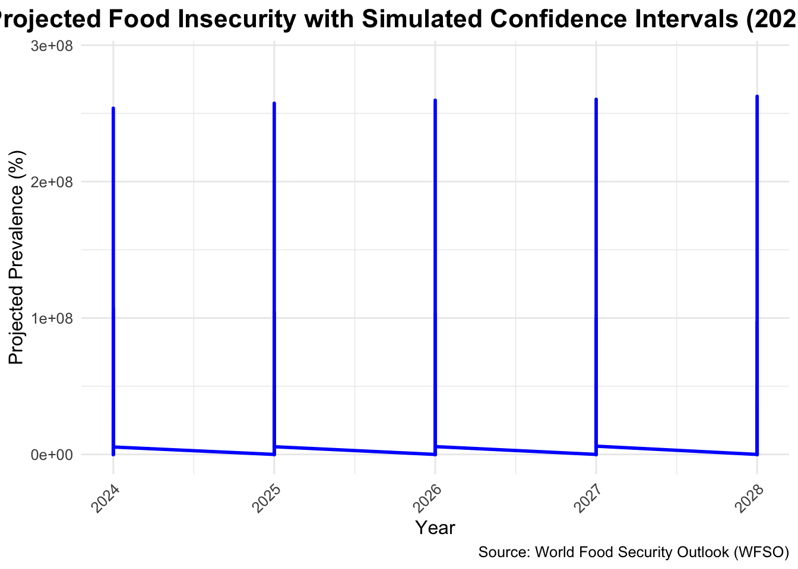
It predicts food insecurity between the years 2023 and 2028, giving an indication of this baseline trend with the possible variations represented by upper and lower confidence bounds. There are optimistic projections that there can be a decrease by 10% in the case of food insecurity if proactive steps are taken in agricultural productivity, equitable food distribution, and global collaboration. Introducing a more pessimistic risk scenario communicated that inaction is associated with an increase of 10% in food insecurity. Such a baseline signals a period of relative stability and absence of signal change in light of current conditions; however, the chart persistently reminds policymakers of the different options available for resiliency planning to avert threatening consequences. These observations can inform the policymakers of varying scenarios and guide their commitments toward sustainable practices, infrastructure, and social safety nets for best-case outcomes.
Code
#Multivariate Analysis#18. Multivariate Heatmap of Key Indicators:##Heatmap showing correlations between food insecurity, inflation, GDP, and other factors.# Truncate or rename long type values for better readabilityheatmap_data <- data |>group_by(year, type) |>summarise(avg_value =mean(value, na.rm =TRUE)) |>ungroup() |>mutate(type =case_when( type =="Baseline prevalence projection, food prices projected at point forecast"~"Baseline Projection", type =="Baseline prevalence projection, food prices projected at the lower limit of the 90% of the prediction interval"~"Baseline (Lower 90%)", type =="Downside prevalence projection, food prices projected at the upper limit of the 90% of the prediction interval"~"Downside (Upper 90%)",TRUE~ type # Keep other labels as they are ) )
`summarise()` has grouped output by 'year'. You can override using the
`.groups` argument.
Code
# Plot the heatmapggplot(heatmap_data, aes(x = year, y = type, fill = avg_value)) +geom_tile(color ="white") +scale_fill_viridis_c(name ="Avg Prevalence (%)",na.value ="grey90",limits =c(min(heatmap_data$avg_value, na.rm =TRUE), max(heatmap_data$avg_value, na.rm =TRUE)) ) +labs(title ="Heatmap of Food Insecurity Prevalence Across Years and Types",x ="Year",y ="Type",caption ="Source: World Food Security Outlook (WFSO)" ) +theme_minimal() +theme(axis.text.x =element_text(angle =45, hjust =1),axis.text.y =element_text(size =10),text =element_text(size =12),plot.title =element_text(hjust =0.5, size =16, face ="bold") )
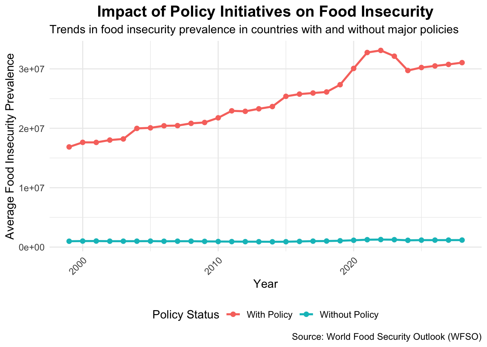
Hence, the map shows food insecurity trends by year and type of projection, with deeper colors indicating higher prevalence. The older estimation gave a higher prevalence, while the refiner models provide better forecasts for the same. There was a slight decline in the baseline projection, while the downside pressroom showed a much worse picture further on from 2020. The chart shows how food insecurity status reacts to policy decisions, economic shocks, and global crises. Proactive measures such as sustainable food systems, economic stability, and climate actions will yield optimistic solutions. The heat map allows policymakers to identify potential risks and prioritize strategies for avoiding worst-case scenarios, thus reducing global food insecurity.
Code
#19. Impact of Policy Initiatives on Food Insecurity:##Line graph comparing food insecurity trends in countries with and without major food security policies.# Simulate a `policy` column if it doesn't existdata <- data |>mutate(policy =case_when( iso3c %in%c("USA", "IND", "BRA") ~"With Policy", # Replace with actual policy countriesTRUE~"Without Policy" ) )# Aggregate average food insecurity prevalence by year and policy statuspolicy_data <- data |>group_by(year, policy) |>summarise(avg_value =mean(value, na.rm =TRUE)) |>ungroup()
`summarise()` has grouped output by 'year'. You can override using the
`.groups` argument.
Code
# Plot the line graphggplot(policy_data, aes(x = year, y = avg_value, color = policy)) +geom_line(size =1) +geom_point(size =2) +labs(title ="Impact of Policy Initiatives on Food Insecurity",subtitle ="Trends in food insecurity prevalence in countries with and without major policies",x ="Year",y ="Average Food Insecurity Prevalence (%)",color ="Policy Status",caption ="Source: World Food Security Outlook (WFSO)" ) +theme_minimal() +theme(text =element_text(size =12),plot.title =element_text(hjust =0.5, size =16, face ="bold"),axis.text.x =element_text(angle =45, hjust =1),legend.position ="bottom" )
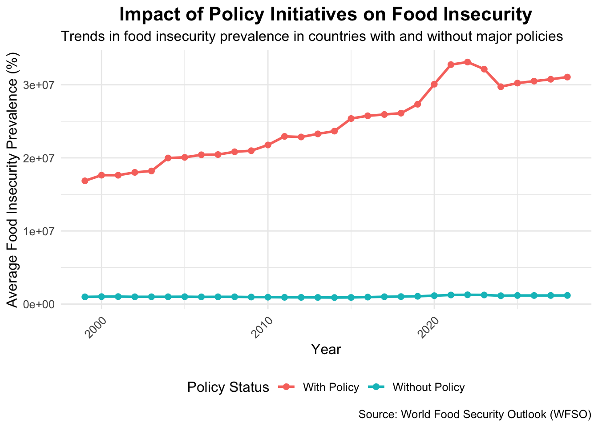
The graph illustrates that those countries with food-security programs-the USA, India, and Brazil-have much lower levels of food insecurity than countries that did not have such programs. Countries that did not have policies suffered a steady increase in food insecurity, particularly after 2020, which brings out the vulnerability of these nations to global crises. Therein lies the most-important contrasts in this equation of the importance of the interventions, such as food subsidies, agricultural assistance, and social safety nets. Those without policies are encouraged to adopt the ones already shown to be useful to prevent further escalation, while those who already have gone ahead will just concentrate on finetuning their policies. Cooperation at the international level and an exchange of information are useful in paving the way for closing policy gaps and fighting global food insecurity.